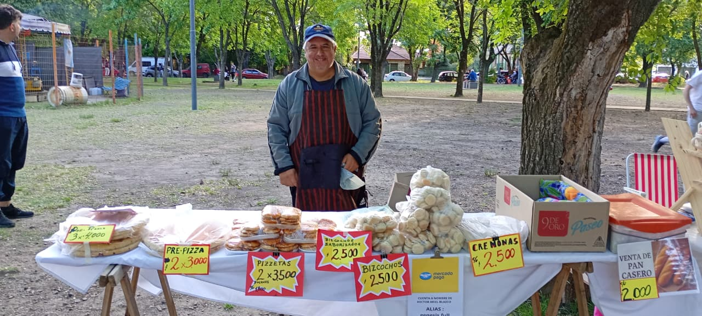

¡Te esperamos!
Nos reunimos el segundo y tercer domingo de cada mes en la Plaza de Mármol.
Horario: 15:30 a 19:30 hs (varía según estación del año).
Próxima fecha: [FECHA A CONFIRMAR]
Sobre el Paseo
El Paseo Artesanal Mármol es un espacio de encuentro donde artesanos locales comparten su trabajo, creatividad y comunidad. Celebramos la producción artesanal y el trabajo hecho a mano en un ambiente familiar y al aire libre.
Leer másNuestros Rubros

Gastronomía

Textiles y Tejidos

Decoración y Arte

Bijouterie y Accesorios

Artesanías y Cerámica
Bienestar y Aromas

Juguetes y Muñecos
Jardín y Mascotas